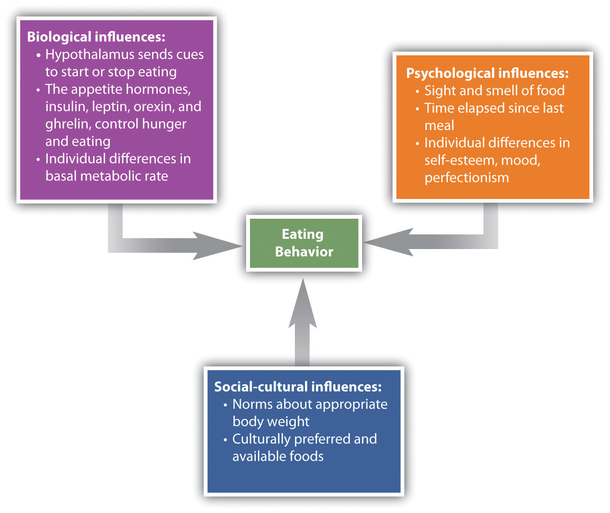
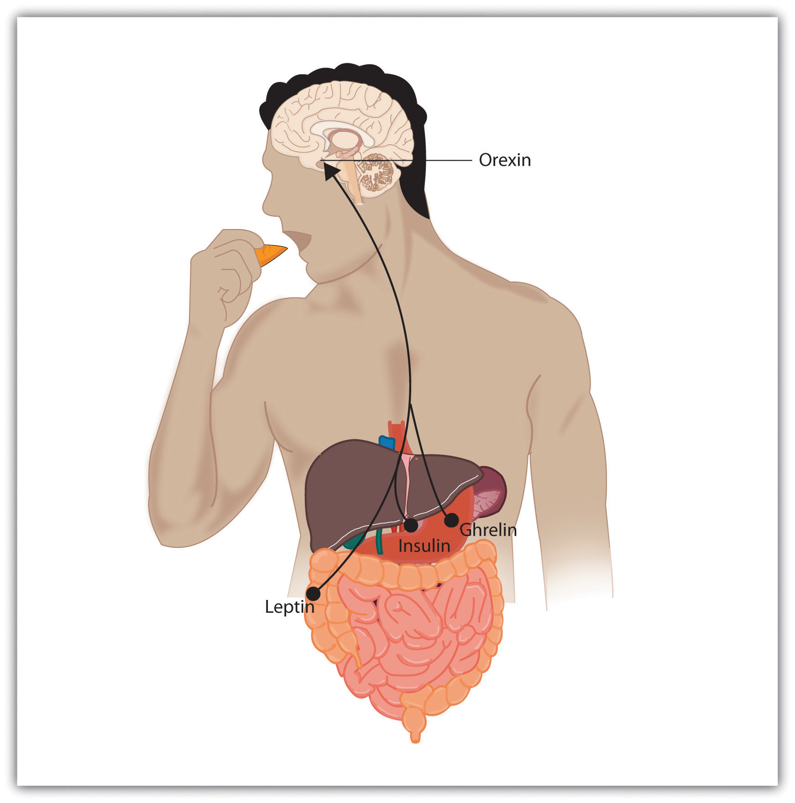
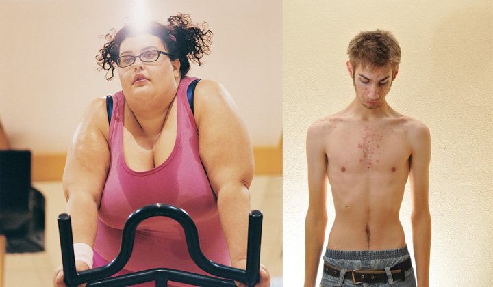

Along with the need to drink fresh water, which humans can normally attain in all except the most extreme situations, the need for food is the most fundamental and important human need. More than 1 in 10 U.S. households contain people who live without enough nourishing food, and this lack of proper nourishment has profound effects on their abilities to create effective lives (Hunger Notes, n.d.).Hunger Notes. (n.d.). How many children are hungry in the United States? Retrieved from http://www.worldhunger.org/articles/04/editorials/hungry_us_children.htm When people are extremely hungry, their motivation to attain food completely changes their behavior. Hungry people become listless and apathetic to save energy and then become completely obsessed with food. Ancel Keys and his colleagues (Keys, Brožek, Henschel, Mickelsen, & Taylor, 1950)Keys, A., Brožek, J., Henschel, A., Mickelsen, O., & Taylor, H. L. (1950). The biology of human starvation (Vols. 1–2). Oxford, England: University of Minnesota Press. found that volunteers who were placed on severely reduced-calorie diets lost all interest in sex and social activities, becoming preoccupied with food.
Like most interesting psychological phenomena, the simple behavior of eating has both biological and social determinants (Figure 10.12 "Biological, Psychological, and Social-Cultural Contributors to Eating"). Biologically, hunger is controlled by the interactions among complex pathways in the nervous system and a variety of hormonal and chemical systems in the brain and body. The stomach is of course important. We feel more hungry when our stomach is empty than when it is full. But we can also feel hunger even without input from the stomach. Two areas of the hypothalamus are known to be particularly important in eating. The lateral part of the hypothalamus responds primarily to cues to start eating, whereas the ventromedial part of the hypothalamus primarily responds to cues to stop eating. If the lateral part of the hypothalamus is damaged, the animal will not eat even if food is present, whereas if the ventromedial part of the hypothalamus is damaged, the animal will eat until it is obese (Wolf & Miller, 1964).Wolf, G., & Miller, N. E. (1964). Lateral hypothalamic lesions: Effects on drinking elicited by carbachol in preoptic area and posterior hypothalamus. Science, 143(Whole No. 3606), 585–587.
Figure 10.12 Biological, Psychological, and Social-Cultural Contributors to Eating
Hunger is also determined by hormone levels (Figure 10.13 "Eating Is Influenced by the Appetite Hormones"). Glucose is the main sugar that the body uses for energy, and the brain monitors blood glucose levels to determine hunger. Glucose levels in the bloodstream are regulated by insulin, a hormone secreted by the pancreas gland. When insulin is low, glucose is not taken up by body cells, and the body begins to use fat as an energy source. Eating and appetite are also influenced by other hormones, including orexin, ghrelin, and leptin (Brennan & Mantzoros, 2006; Nakazato et al., 2001).Brennan, A. M., & Mantzoros, C. S. (2006). Drug insight: The role of leptin in human physiology and pathophysiology-emerging clinical applications. Nature Clinical Practice Endocrinology Metabolism, 2(6), 318–27. doi:10.1038/ncpendmet0196; Nakazato, M., Murakami, N., Date, Y., Kojima, M., Matsuo, H., Kangawa, K., & Matsukura S. (2001). A role for ghrelin in the central regulation of feeding. Nature, 409(6817), 194–198.
Figure 10.13 Eating Is Influenced by the Appetite Hormones
Insulin, secreted by the pancreas, controls blood glucose; leptin, secreted by fat cells, monitors energy levels; orexin, secreted by the hypothalamus, triggers hunger; ghrelin, secreted by an empty stomach, increases food intake.
Normally the interaction of the various systems that determine hunger creates a balance or homeostasis in which we eat when we are hungry and stop eating when we feel full. But homeostasis varies among people; some people simply weigh more than others, and there is little they can do to change their fundamental weight. Weight is determined in large part by the basal metabolic rateThe amount of energy expended while at rest, which influences one’s weight., the amount of energy expended while at rest. Each person’s basal metabolic rate is different, due to his or her unique physical makeup and physical behavior. A naturally occurring low metabolic rate, which is determined entirely by genetics, makes weight management a very difficult undertaking for many people.
How we eat is also influenced by our environment. When researchers rigged clocks to move faster, people got hungrier and ate more, as if they thought they must be hungry again because so much time had passed since they last ate (Schachter, 1968).Schachter, S. (1968). Obesity and eating. Science, 161(3843), 751–756. And if we forget that we have already eaten, we are likely to eat again even if we are not actually hungry (Rozin, Dow, Moscovitch, & Rajaram, 1998).Rozin, P., Dow, S., Moscovitch, M., & Rajaram, S. (1998). What causes humans to begin and end a meal? A role for memory for what has been eaten, as evidenced by a study of multiple meal eating in amnesic patients. Psychological Science, 9(5), 392–396.
Cultural norms about appropriate weights also influence eating behaviors. Current norms for women in Western societies are based on a very thin body ideal, emphasized by television and movie actresses, models, and even children’s dolls, such as the ever-popular Barbie. These norms for excessive thinness are very difficult for most women to attain: Barbie’s measurements, if translated to human proportions, would be about 36 in.-18 in.-33 in. at bust-waist-hips, measurements that are attained by less than 1 in 100,000 women (Norton, Olds, Olive, & Dank, 1996).Norton, K. I., Olds, T. S., Olive, S., & Dank, S. (1996). Ken and Barbie at life size. Sex Roles, 34(3–4), 287–294. Many women idealize being thin and yet are unable to reach the standard that they prefer.
In some cases, the desire to be thin can lead to eating disorders, which are estimated to affect about 1 million males and 10 million females the United States alone (Hoek & van Hoeken, 2003; Patrick, 2002).Hoek, H. W., & van Hoeken, D. (2003). Review of the prevalence and incidence of eating disorders. International Journal of Eating Disorders, 34(4), 383–396; Patrick, L. (2002). Eating disorders: A review of the literature with emphasis on medical complications and clinical nutrition. Alternative Medicine Review, 7(3), 184–202. Anorexia nervosaAn eating disorder characterized by extremely low body weight, distorted body image, and an obsessive fear of gaining weight. is an eating disorder characterized by extremely low body weight, distorted body image, and an obsessive fear of gaining weight. Nine out of 10 sufferers are women. Anorexia begins with a severe weight loss diet and develops into a preoccupation with food and dieting.
Bulimia nervosaAn eating disorder characterized by binge eating followed by purging. is an eating disorder characterized by binge eating followed by purging. Bulimia nervosa begins after the dieter has broken a diet and gorged. Bulimia involves repeated episodes of overeating, followed by vomiting, laxative use, fasting, or excessive exercise. It is most common in women in their late teens or early 20s, and it is often accompanied by depression and anxiety, particularly around the time of the binging. The cycle in which the person eats to feel better, but then after eating becomes concerned about weight gain and purges, repeats itself over and over again, often with major psychological and physical results.
Eating disorders are in part heritable (Klump, Burt, McGue, & Iacono, 2007),Klump, K. L., Burt, S. A., McGue, M., & Iacono, W. G. (2007). Changes in genetic and environmental influences on disordered eating across adolescence: A longitudinal twin study. Archives of General Psychiatry, 64(12), 1409–1415. and it is not impossible that at least some have been selected through their evolutionary significance in coping with food shortages (Guisinger, 2008).Guisinger, S. (2008). Competing paradigms for anorexia nervosa. American Psychologist, 63(3), 199–200. Eating disorders are also related psychological causes, including low self-esteem, perfectionism, and the perception that one’s body weight is too high (Vohs et al., 2001),Vohs, K. D., Voelz, Z. R., Pettit, J. W., Bardone, A. M., Katz, J., Abramson, L. Y.,…Joiner, T. E., Jr. (2001). Perfectionism, body dissatisfaction, and self-esteem: An interactive model of bulimic symptom development. Journal of Social and Clinical Psychology, 20(4), 476–497. as well as to cultural norms about body weight and eating (Crandall, 1988).Crandall, C. S. (1988). Social contagion of binge eating. Journal of Personality & Social Psychology, 55(4), 588–598. Because eating disorders can create profound negative health outcomes, including death, people who suffer from them should seek treatment. This treatment is often quite effective.
Figure 10.14
Eating disorders can lead people to be either too fat or too thin. Both are unhealthy.
Although some people eat too little, eating too much is also a major problem. ObesityA medical condition in which so much excess body fat has accumulated in the body that it begins to have an adverse impact on health. is a medical condition in which so much excess body fat has accumulated in the body that it begins to have an adverse impact on health. In addition to causing people to be stereotyped and treated less positively by others (Crandall, Merman, & Hebl, 2009),Crandall, C. S., Merman, A., & Hebl, M. (2009). Anti-fat prejudice. In T. D. Nelson (Ed.), Handbook of prejudice, stereotyping, and discrimination (pp. 469–487). New York, NY: Psychology Press. uncontrolled obesity leads to health problems including cardiovascular disease, diabetes, sleep apnea, arthritis, Alzheimer’s disease, and some types of cancer (Gustafson, Rothenberg, Blennow, Steen, & Skoog, 2003).Gustafson, D., Rothenberg, E., Blennow, K., Steen, B., & Skoog, I. (2003). An 18-year follow-up of overweight and risk of Alzheimer disease. Archives of Internal Medicine, 163(13), 1524. Obesity also reduces life expectancy (Haslam & James, 2005).Haslam, D. W., & James, W. P. (2005). Obesity. Lancet, 366(9492), 197–209. doi:10.1016/S0140-6736(05)67483-1
Obesity is determined by calculating the body mass index (BMI), a measurement that compares one’s weight and height. People are defined as overweight when their BMI is greater than 25 kg/m2 and as obese when it is greater than 30 kg/m2. If you know your height and weight, you can go to http://www.nhlbisupport.com/bmi to calculate your BMI.
Obesity is a leading cause of death worldwide. Its prevalence is rapidly increasing, and it is one of the most serious public health problems of the 21st century. Although obesity is caused in part by genetics, it is increased by overeating and a lack of physical activity (Nestle & Jacobson, 2000; James, 2008).Nestle, M., & Jacobson, M. F. (2000). Halting the obesity epidemic: A public health policy approach. Public Health Reports, 115(1), 12–24. doi:10.1093/phr/115.1.12; James, W. P. (2008). The fundamental drivers of the obesity epidemic. Obesity Review, 9(Suppl. 1), 6–13.
There are really only two approaches to controlling weight: eat less and exercise more. Dieting is difficult for anyone, but it is particularly difficult for people with slow basal metabolic rates, who must cope with severe hunger to lose weight. Although most weight loss can be maintained for about a year, very few people are able to maintain substantial weight loss through dieting alone for more than three years (Miller, 1999).Miller, W. C. (1999). How effective are traditional dietary and exercise interventions for weight loss? Medicine & Science in Sports & Exercise, 31(8), 1129–1134. Substantial weight loss of more than 50 pounds is typically seen only when weight loss surgery has been performed (Douketis, Macie, Thabane, & Williamson, 2005).Douketis, J. D., Macie C., Thabane, L., & Williamson, D. F. (2005). Systematic review of long-term weight loss studies in obese adults: Clinical significance and applicability to clinical practice. International Journal of Obesity, 29, 1153–1167. doi:10.1038/sj.ijo.0802982 Weight loss surgery reduces stomach volume or bowel length, leading to earlier satiation and reduced ability to absorb nutrients from food.
Although dieting alone does not produce a great deal of weight loss over time, its effects are substantially improved when it is accompanied by more physical activity. People who exercise regularly, and particularly those who combine exercise with dieting, are less likely to be obese (Borer, 2008).Borer, K. T. (2008). How effective is exercise in producing fat loss? Kinesiology, 40(2), 126–137. Exercise not only improves our waistline but also makes us healthier overall. Exercise increases cardiovascular capacity, lowers blood pressure, and helps improve diabetes, joint flexibility, and muscle strength (American Heart Association, 1998).American Heart Association. (1998). Statement on exercise, benefits and recommendations for physical activity programs for all Americans. American Heart Association, 94, 857–862. Retrieved from http://circ.ahajournals.org/cgi/content/full/94/4/857?ijkey=6e9ad2e53ba5b25f9002a707e5e4b5b8ee015481&keytype2=tf_ipsecsha Exercise also slows the cognitive impairments that are associated with aging (Kramer, Erickson, & Colcombe, 2006).Kramer, A. F., Erickson, K. I., & Colcombe, S. J. (2006). Exercise, cognition, and the aging brain. Journal of Applied Physiology, 101(4), 1237–1242.
Because the costs of exercise are immediate but the benefits are long-term, it may be difficult for people who do not exercise to get started. It is important to make a regular schedule, to work exercise into one’s daily activities, and to view exercise not as a cost but as an opportunity to improve oneself (Schomer & Drake, 2001).Schomer, H., & Drake, B. (2001). Physical activity and mental health. International SportMed Journal, 2(3), 1. Retrieved from Academic Search Premier Database. Exercising is more fun when it is done in groups, so team exercise is recommended (Kirchhoff, Elliott, Schlichting, & Chin, 2008).Kirchhoff, A., Elliott, L., Schlichting, J., & Chin, M. (2008). Strategies for physical activity maintenance in African American women. American Journal of Health Behavior, 32(5), 517–524. Retrieved from Academic Search Premier Database.
A recent report found that only about one-half of Americans perform the 30 minutes of exercise 5 times a week that the Centers for Disease Control and Prevention suggests as the minimum healthy amount (Centers for Disease Control and Prevention, 2007).Centers for Disease Control and Prevention. (2007). Prevalence of regular physical activity among adults—United States, 2001–2005. Morbidity and Mortality Weekly Report, 56(46), 1209–1212. As for the other half of Americans, they most likely are listening to the guidelines, but they are unable to stick to the regimen. Almost half of the people who start an exercise regimen give it up by the 6-month mark (American Heart Association, 1998).American Heart Association. (1998). Statement on exercise, benefits and recommendations for physical activity programs for all Americans. American Heart Association, 94, 857–862. Retrieved from http://circ.ahajournals.org/cgi/content/full/94/4/857?ijkey=6e9ad2e53ba5b25f9002a707e5e4b5b8ee015481&keytype2=tf_ipsecsha This is a problem, given that exercise has long-term benefits only if it is continued.
Perhaps the most important aspect of human experience is the process of reproduction. Without it, none of us would be here. Successful reproduction in humans involves the coordination of a wide variety of behaviors, including courtship, sex, household arrangements, parenting, and child care.
The sexual drive, with its reward of intense pleasure in orgasm, is highly motivating. The biology of the sexual response was studied in detail by Masters and Johnson (1966),Masters, W. H., & Johnson, V. E. (1966). Human sexual response. New York, NY: Bantam Books. who monitored or filmed more than 700 men and women while they masturbated or had intercourse. Masters and Johnson found that the sexual response cycleThe biological sexual response in humans.—the biological sexual response in humans—was very similar in men and women, and consisted of four stages:
The sexual response cycle and sexual desire are regulated by the sex hormones estrogen in women and testosterone in both women and in men. Although the hormones are secreted by the ovaries and testes, it is the hypothalamus and the pituitary glands that control the process. Estrogen levels in women vary across the menstrual cycle, peaking during ovulation (Pillsworth, Haselton, & Buss, 2004).Pillsworth, E., Haselton, M., & Buss, D. (2004). Ovulatory shifts in female sexual desire. Journal of Sex Research, 41(1), 55–65. Retrieved from Academic Search Premier Database. Women are more interested in having sex during ovulation but can experience high levels of sexual arousal throughout the menstrual cycle.
In men, testosterone is essential to maintain sexual desire and to sustain an erection, and testosterone injections can increase sexual interest and performance (Aversa et al., 2000; Jockenhövel et al., 2009).Aversa, A., Isidori, A., De Martino, M., Caprio, M., Fabbrini, E., Rocchietti-March, M.,…Fabri, A. (2000). Androgens and penile erection: evidence for a direct relationship between free testosterone and cavernous vasodilation in men with erectile dysfunction. Clinical Endocrinology, 53(4), 517–522. doi:10.1046/j.1365-2265.2000.01118.x; Jockenhövel, F., Minnemann, T., Schubert, M., Freude, S., Hübler, D., Schumann, C.,…Ernst, M. (2009). Timetable of effects of testosterone administration to hypogonadal men on variables of sex and mood. Aging Male, 12(4), 113–118. doi:10.3109/13685530903322858 Testosterone is also important in the female sex cycle. Women who are experiencing menopause may develop a loss of interest in sex, but this interest may be rekindled through estrogen and testosterone replacement treatments (Meston & Frohlich, 2000).Meston, C. M., & Frohlich, P. F. (2000). The neurobiology of sexual function. Archives of General Psychiatry, 57(11), 1012–1030.
Although their biological determinants and experiences of sex are similar, men and women differ substantially in their overall interest in sex, the frequency of their sexual activities, and the mates they are most interested in. Men show a more consistent interest in sex, whereas the sexual desires of women are more likely to vary over time (Baumeister, 2000).Baumeister, R. F. (2000). Gender differences in erotic plasticity: The female sex drive as socially flexible and responsive. Psychological Bulletin, 126(3), 347–374. Men fantasize about sex more often than women, and their fantasies are more physical and less intimate (Leitenberg & Henning, 1995).Leitenberg, H., & Henning, K. (1995). Sexual fantasy. Psychological Bulletin, 117(3), 469–496. Men are also more willing to have casual sex than are women, and their standards for sex partners is lower (Petersen & Hyde, 2010; Saad, Eba, & Sejean, 2009).Petersen, J. L., & Hyde, J. S. (2010). A meta-analytic review of research on gender differences in sexuality, 1993–2007. Psychological Bulletin, 136(1), 21–38; Saad, G., Eba, A., & Sejean, R. (2009). Sex differences when searching for a mate: A process-tracing approach. Journal of Behavioral Decision Making, 22(2), 171–190.
Gender differences in sexual interest probably occur in part as a result of the evolutionary predispositions of men and women, and this interpretation is bolstered by the finding that gender differences in sexual interest are observed cross-culturally (Buss, 1989).Buss, D. M. (1989). Sex differences in human mate preferences: Evolutionary hypotheses tested in 37 cultures. Behavioral and Brain Sciences, 12(1), 1–49. Evolutionarily, women should be more selective than men in their choices of sex partners because they must invest more time in bearing and nurturing their children than do men (most men do help out, of course, but women simply do more [Buss & Kenrick, 1998]).Buss, D., & Kenrick, D. (1998). Evolutionary social psychology. In D. T. Gilbert, S. T. Fiske, & G. Lindzey (Eds.), Handbook of Social Psychology (4th ed., Vol. 2, pp. 982–1026). Boston, MA: McGraw-Hill. Because they do not need to invest a lot of time in child rearing, men may be evolutionarily predisposed to be more willing and desiring of having sex with many different partners and may be less selective in their choice of mates. Women, on the other hand, because they must invest substantial effort in raising each child, should be more selective.
Sex researchers have found that sexual behavior varies widely, not only between men and women but within each sex (Kinsey, Pomeroy, & Martin, 1948/1998; Kinsey, 1953/1998).Kinsey, A. C., Pomeroy, W. B., & Martin, C. E. (1998). Sexual behavior in the human male. Bloomington: Indiana University Press. (Original work published 1948); Kinsey, A. C. (1998). Sexual behavior in the human female. Bloomington: Indiana University Press. (Original work published 1953) About a quarter of women report having a low sexual desire, and about 1% of people report feeling no sexual attraction whatsoever (Bogaert, 2004; Feldhaus-Dahir, 2009; West et al., 2008).Bogaert, A. (2004). Asexuality: Prevalence and associated factors in a national probability sample. Journal of Sex Research, 41(3), 279–287. Retrieved from Academic Search Premier Database; Feldhaus-Dahir, M. (2009). The causes and prevalence of hypoactive sexual desire disorder: Part I. Urologic Nursing, 29(4), 259–263. Retrieved from Academic Search Premier Database; West, S. L., D’Aloisio, A. A., Agans, R. P., Kalsbeek, W. D., Borisov, N. N., & Thorp, J. M. (2008). Prevalence of low sexual desire and hypoactive sexual desire disorder in a nationally representative sample of US women. Archives of Internal Medicine, 168(13), 1441–1449. There are also people who experience hyperactive sexual drives. For about 3% to 6% of the population (mainly men), the sex drive is so strong that it dominates life experience and may lead to hyperactive sexual desire disorder (Kingston & Firestone, 2008).Kingston, D. A., & Firestone, P. (2008). Problematic hypersexuality: A review of conceptualization and diagnosis. Sexual Addictions and Compulsivity, 15, 284–310.
There is also variety in sexual orientationThe direction of our sexual desire, toward people of the opposite sex, people of the same sex, or people of both sexes., which is the direction of our sexual desire toward people of the opposite sex, people of the same sex, or people of both sexes. The vast majority of human beings have a heterosexual orientation—their sexual desire is focused toward members of the opposite sex. A smaller minority is primarily homosexual (i.e., they have sexual desire for members of their own sex). Between 3% and 4% of men are gay, and between 1% and 2% of women are lesbian. Another 1% of the population reports being bisexual (having desires for both sexes). The love and sexual lives of homosexuals are little different from those of heterosexuals, except where their behaviors are constrained by cultural norms and local laws. As with heterosexuals, some gays and lesbians are celibate, some are promiscuous, but most are in committed, long-term relationships (Laumann, Gagnon, Michael, & Michaels, 1994).Laumann, E. O., Gagnon, J. H., Michael, R. T., & Michaels, S. (1994). The social organization of sexuality in the United States. Chicago, IL: University of Chicago Press.
Although homosexuality has been practiced as long as records of human behavior have been kept, and occurs in many animals at least as frequently as it does in humans, cultures nevertheless vary substantially in their attitudes toward it. In Western societies such as the United States and Europe, attitudes are becoming progressively more tolerant of homosexuality, but it remains unacceptable in many other parts of the world. The American Psychiatric Association no longer considers homosexuality to be a “mental illness,” although it did so until 1973. Because prejudice against gays and lesbians can lead to experiences of ostracism, depression, and even suicide (Kulkin, Chauvin, & Percle, 2000),Kulkin, H. S., Chauvin, E. A., & Percle, G. A. (2000). Suicide among gay and lesbian adolescents and young adults: A review of the literature. Journal of Homosexuality, 40(1), 1–29. these improved attitudes can benefit the everyday lives of gays, lesbians, and bisexuals.
Whether sexual orientation is driven more by nature or by nurture has received a great deal of research attention, and research has found that sexual orientation is primarily biological (Mustanski, Chivers, & Bailey, 2002).Mustanski, B. S., Chivers, M. L., & Bailey, J. M. (2002). A critical review of recent biological research on human sexual orientation. Annual Review of Sex Research, 13, 89–140. Areas of the hypothalamus are different in homosexual men, as well as in animals with homosexual tendencies, than they are in heterosexual members of the species, and these differences are in directions such that gay men are more similar to women than are straight men (Gladue, 1994; Lasco, Jordan, Edgar, Petito, & Byrne, 2002; Rahman & Wilson, 2003).Gladue, B. A. (1994). The biopsychology of sexual orientation. Current Directions in Psychological Science, 3(5), 150–154; Lasco, M., Jordan, T., Edgar, M., Petito, C., & Byne, W. (2002). A lack of dimorphism of sex or sexual orientation in the human anterior commissure. Brain Research, 936(1/2), 95; Rahman, Q., & Wilson, G. D. (2003). Born gay? The psychobiology of human sexual orientation. Personality and Individual Differences, 34(8), 1337–1382. Twin studies also support the idea that there is a genetic component to sexual orientation. Among male identical twins, 52% of those with a gay brother also reported homosexuality, whereas the rate in fraternal twins was just 22% (Bailey et al., 1999; Pillard & Bailey, 1998).Bailey, J., Pillard, R., Dawood, K., Miller, M., Farrer, L., Shruti Trivedi, L.,…Murphy, R. L. (1999). A family history study of male sexual orientation using three independent samples. Behavior Genetics, 29(2), 79–86. Retrieved from Academic Search Premier Database; Pillard, R., & Bailey, J. (1998). Human sexual orientation has a heritable component. Human Biology, 70(2), 347. Retrieved from Academic Search Premier Database. There is also evidence that sexual orientation is influenced by exposure and responses to sex hormones (Hershberger & Segal, 2004; Williams & Pepitone, 2000).Hershberger, S., & Segal, N. (2004). The cognitive, behavioral, and personality profiles of a male monozygotic triplet set discordant for sexual orientation. Archives of Sexual Behavior, 33(5), 497–514. Retrieved from Academic Search Premier Database; Williams, T., & Pepitone, M. (2000.) Finger-length ratios and sexual orientation. Nature, 404, 455.
Although smoking cigarettes, drinking alcohol, using recreational drugs, engaging in unsafe sex, and eating too much may produce enjoyable positive emotions in the short term, they are some of the leading causes of negative health outcomes and even death in the long term (Mokdad, Marks, Stroup, & Gerberding, 2004).Mokdad, A. H., Marks, J. S., Stroup, D. F., & Gerberding, J. L. (2004). Actual causes of death in the United States, 2000. Journal of the American Medical Association, 291(10), 1238–1240. To avoid these negative outcomes, we must use our cognitive resources to plan, guide, and restrain our behaviors. And we (like Captain Sullenberger) can also use our emotion regulation skills to help us do better.
Even in an age where the addictive and detrimental health effects of cigarette smoking are well understood, more than 60% of children try smoking before they are 18 years old, and more than half who have smoked have tried and failed to quit (Fryar, Merino, Hirsch, & Porter, 2009).Fryar, C. D., Merino, M. C., Hirsch, R., & Porter, K. S. (2009). Smoking, alcohol use, and illicit drug use reported by adolescents aged 12–17 years: United States, 1999–2004. National Health Statistics Reports, 15, 1–23. Although smoking is depicted in movies as sexy and alluring, it is highly addictive and probably the most dangerous thing we can do to our body. Poor diet and physical inactivity combine to make up the second greatest threat to our health. But we can improve our diet by eating more natural and less processed food, and by monitoring our food intake. And we can start and maintain an exercise program. Exercise keeps us happier, improves fitness, and leads to better health and lower mortality (Fogelholm, 2010; Galper, Trivedi, Barlow, Dunn, & Kampert, 2006; Hassmén, Koivula, & Uutela, 2000).Fogelholm, M. (2010). Physical activity, fitness and fatness: Relations to mortality, morbidity and disease risk factors. A systematic review. Obesity Reviews, 11(3), 202–221. doi:10.1111/j.1467-789X.2009.00653.x; Galper, D., Trivedi, M., Barlow, C., Dunn, A., & Kampert, J. (2006). Inverse association between physical inactivity and mental health in men and women. Medicine & Science in Sports & Exercise, 38(1), 173–178. doi:10.1249/01.mss.0000180883.32116.28; Hassmén, P., Koivula, N., & Uutela, A. (2000). Physical exercise and psychological well-being: A population study in Finland. Preventive Medicine: An International Journal Devoted to Practice and Theory, 30(1), 17–25. And exercise also has a variety of positive influences on our cognitive processes, including academic performance (Hillman, Erickson, & Kramer, 2008).Hillman, C. H., Erickson, K. I., & Kramer, A. F. (2008). Be smart, exercise your heart: Exercise effects on brain and cognition. Nature Reviews Neuroscience, 9(1), 58–65.
Alcohol abuse, and particularly binge drinking (i.e., having five or more drinks in one sitting), is often the norm among high school and college students, but it has severe negative health consequences. Bingeing leads to deaths from car crashes, drowning, falls, gunshots, and alcohol poisoning (Valencia-Martín, Galán, & Rodríguez-Artalejo, 2008).Valencia-Martín, J., Galán, I., & Rodríguez-Artalejo, F. (2008). The joint association of average volume of alcohol and binge drinking with hazardous driving behaviour and traffic crashes. Addiction, 103(5), 749–757. doi:10.1111/j.1360-0443.2008.02165.x Binge-drinking students are also more likely to be involved in other risky behaviors, such as smoking, drug use, dating violence, or attempted suicide (Miller, Naimi, Brewer, & Jones, 2007).Miller, J., Naimi, T., Brewer, R., & Jones, S. (2007). Binge drinking and associated health risk behaviors among high school students. Pediatrics, 119(1), 76–85. doi:10.1542/peds.2006–1517 Binge drinking may also damage neural pathways in the brain (McQueeny et al., 2009)McQueeny, T., Schweinsburg, B., Schweinsburg, A., Jacobus, J., Bava, S., Frank, L.,…Tapert, S. F. (2009). Altered white matter integrity in adolescent binge drinkers. Alcoholism: Clinical & Experimental Research, 33(7), 1278–1285. doi:10.1111/j.1530-0277.2009.00953.x and lead to lifelong alcohol abuse and dependency (Kim et al., 2008).Kim, J., Sing, L., Chow, J., Lau, J., Tsang, A., Choi, J.,…Griffiths, S. M. (2008). Prevalence and the factors associated with binge drinking, alcohol abuse, and alcohol dependence: A population-based study of Chinese adults in Hong Kong. Alcohol & Alcoholism, 43(3), 360–370. doi:10.1093/Alcalc/Agm181 Illicit drug use has also been increasing and is linked to the spread of infectious diseases such as HIV, hepatitis B, and hepatitis C (Monteiro, 2001).Monteiro, M. (2001). A World Health Organization perspective on alcohol and illicit drug use and health. European Addiction Research, 7(3), 98–103. doi:10.1159/000050727
Some teens abstain from sex entirely, particularly those who are very religious, but most experiment with it. About half of U.S. children under 18 report having had intercourse, a rate much higher than in other parts of the world. Although sex is fun, it can also kill us if we are not careful. Sexual activity can lead to guilt about having engaged in the act itself, and may also lead to unwanted pregnancies and sexually transmitted infections (STIs), including HIV infection. Alcohol consumption also leads to risky sexual behavior. Sex partners who have been drinking are less likely to practice safe sex and have an increased risk of STIs, including HIV infection (Hutton, McCaul, Santora, & Erbelding 2008; Raj et al., 2009).Hutton, H., McCaul, M., Santora, P., & Erbelding, E. (2008). The relationship between recent alcohol use and sexual behaviors: Gender differences among sexually transmitted disease clinic patients. Alcoholism: Clinical & Experimental Research, 32(11), 2008–2015; Raj, A., Reed, E., Santana, M., Walley, A., Welles, S., Horsburgh, C.,…Silverman, J. G. (2009). The associations of binge alcohol use with HIV/STI risk and diagnosis among heterosexual African American men. Drug & Alcohol Dependence, 101(1/2), 101–106.
It takes some work to improve and maintain our health and happiness, and our desire for the positive emotional experiences that come from engaging in dangerous behaviors can get in the way of this work. But being aware of the dangers, working to control our emotions, and using our resources to engage in healthy behaviors and avoid unhealthy ones are the best things we can do for ourselves.